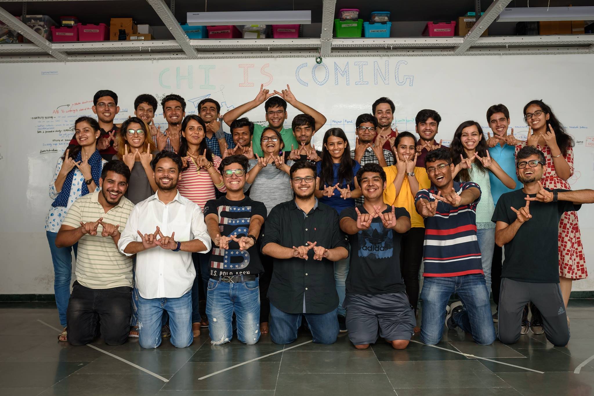

Member, Weave Lab, IIIT - Delhi


Weave lab is home to an active HCI community with a mix of Ph.Ds., Bachelors and Research Assistants, that explores embedding interactivity onto everyday objects. It is spearheaded by Dr. Aman Parnami, an active HCI researcher and Assistant professor at IIIT-Delhi. The lab is involved in a wide range of work, the current topics of exploration within the lab are regarding VR, robotics, soft robotics, brain sensing inputs, voice inputs, ludic design and healthcare. With 4 research papers from the lab already accepted and 8 papers already under review in top tier conferences since its inception from summer of 2018, the lab is doing the best cutting-edge work in HCI in India and fostering great talent. I worked as a Research Assistant in Weave Lab at Indraprastha Institute of Technology, Delhi for the 3 years. While working in Weave Lab, I got exposed to the various working applications in HCI, understood how users interact with different types of interfaces and intuitively interact with them. I got an understanding of conducting user studies with new research methodologies, and analyzing data for useful insights in tool evaluation. Further, I also developed a user-centric design thinking and technical grounding in psychology, digital audio signal processing and para-linguistics from my previous research projects. weave.iiitd.edu.in